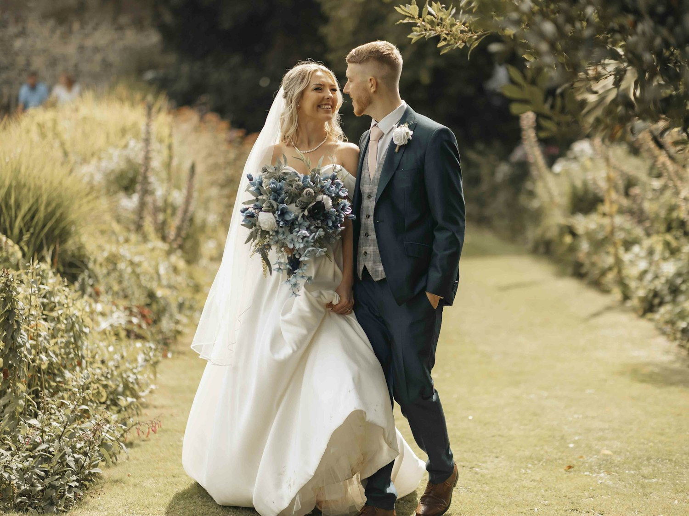
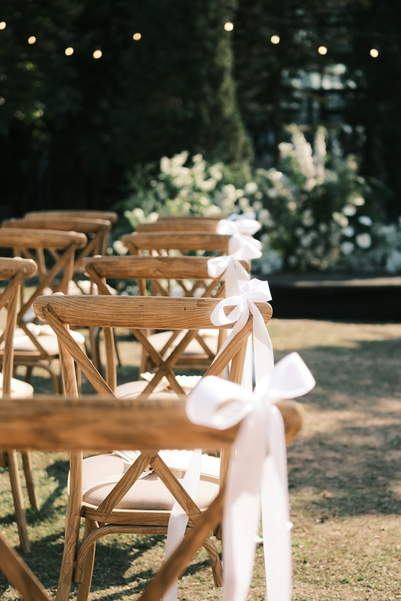
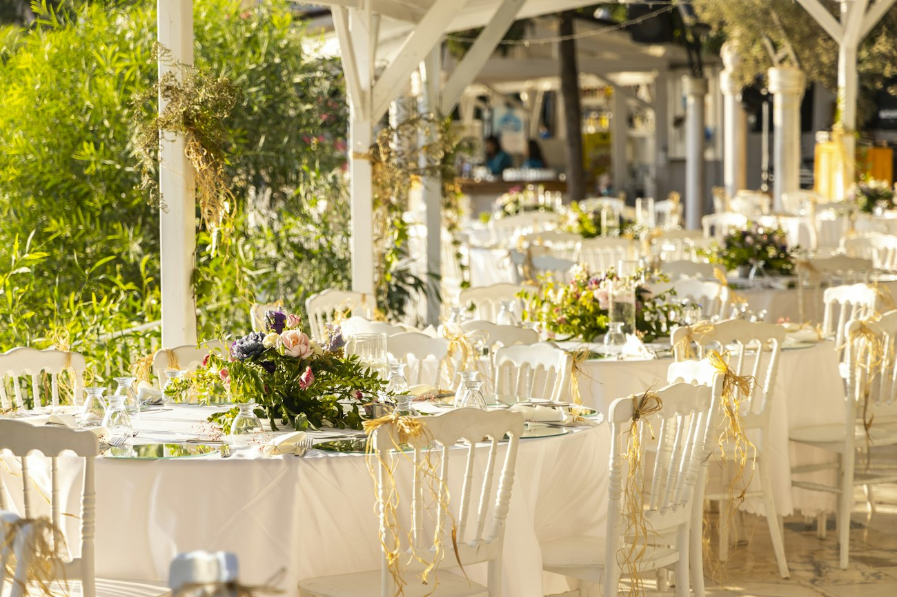
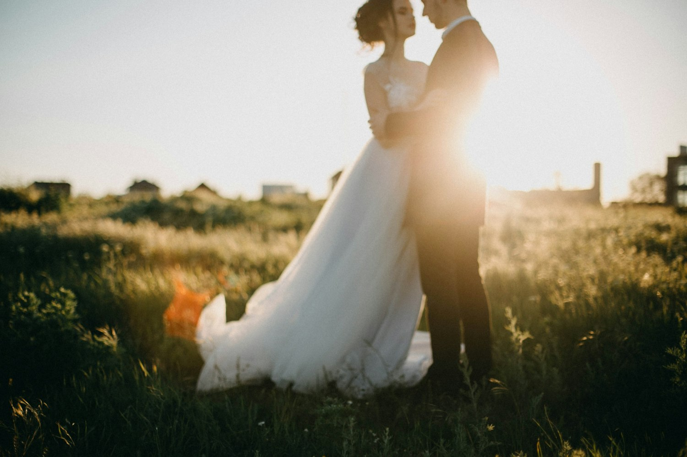

Cerimónia ao ar livre
Cerca de 40 minutos entre as tílias. Haverá sombra e água, mas um leque nunca é demais.
16:30 · Jardim da capelaConvite de casamentoInês & Tomás
Toque no selo para abrir
“Há caminhos que só fazem sentido a dois.”
O nosso casamento

Queridos família e amigos,
com o coração cheio de alegria, e em conjunto com as nossas famílias, convidamos-vos a celebrar connosco o dia em que começamos a nossa vida a dois.
têm a honra de vos convidar
O programa
Desliza o cursor e vê como a tarde se transforma em noite — e o que vai acontecer a cada hora.
Desliza, ou toca num momento da lista ↓
Onde
A cerimónia e a festa ficam a poucos minutos uma da outra. Há parque para os carros e autocarro de regresso.

Cerimónia religiosa seguida de bênção ao ar livre, no jardim. Pede-se que cheguem a partir das 16:00.

Copa de boas-vindas no pátio, jantar sob o alpendre e festa na eira até de madrugada.
Para vos preparar
Cerca de 40 minutos entre as tílias. Haverá sombra e água, mas um leque nunca é demais.
16:30 · Jardim da capelaMoscatel gelado, limonada de hortelã e petiscos de época enquanto os noivos tiram fotografias.
18:00 · Pátio da quintaMenu de três momentos, pensado para partilhar. Opções de carne, peixe e vegetariana — diz-nos a tua na confirmação.
20:00 · AlpendrePrimeira dança, bolo e pista aberta. Leva sapatos confortáveis para a segunda parte da noite.
23:00 · Eira das luzinhasAutocarro de regresso à cidade e a algumas moradas de alojamento próximas. Combina o lugar na confirmação.
02:30 e 03:00 · À saídaO que vestir
Cores da terra e do eucalipto. Toca numa cor para a veres.
O verde-acinzentado das folhas do convite. Fica bem em vestidos fluidos e fatos de linho.
Presentes
Se mesmo assim quiserem oferecer-nos algo, o que mais nos ajudaria era uma contribuição para a nossa viagem de lua de mel. Em envelope no dia, ou por transferência.
PT50 0000 0000 0000 0000 0000 0IBAN de exemplo, sem valor real.
Pedimos a vossa compreensão: queremos que todos, pais incluídos, dancem sem preocupações. Obrigada por compreenderem.
Até 1 de maio
Confirmem a vossa presença por mensagem. Escolham as opções e o WhatsApp abre com tudo escrito: só falta carregar em enviar.
Número dos noivos · a confirmar
Demonstração: sem número, o WhatsApp deixa escolher o contacto.
Dúvidas
Temos tenda e alpendre prontos. A cerimónia passa para dentro da capela e a copa para o salão da quinta. Avisamos por mensagem de manhã.
Na cerimónia pedimos telemóveis guardados — o fotógrafo trata das imagens. Na copa e na festa, fotografa à vontade e marca-nos.
Sim, junto à capela e na quinta (ver o mapa). Se preferires beber um copo à vontade, usa o autocarro de regresso.
Teremos uma lista de alojamentos próximos a confirmar. Quanto mais cedo reservares, melhor.
O convite é dirigido a quem o recebeu. Se tiveres dúvidas sobre acompanhantes, escreve-nos por WhatsApp.
Partilhar
Mostrem este QR code ou enviem-lhe o guia.

Mal podemos esperar
Vemo-nos a 12 de junho.
12 · 06 · 2027